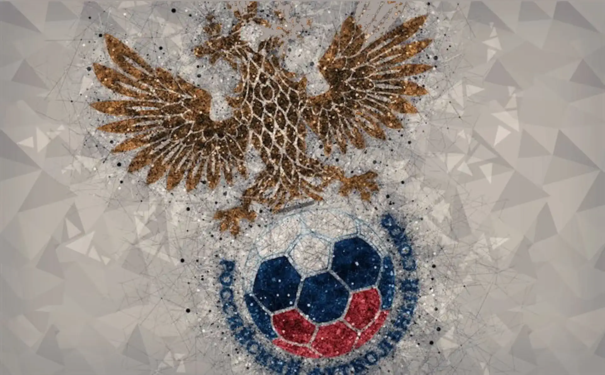

<section class="relative w-full h-full overflow-hidden bg-[rgb(5,5,5)]">
  <!-- Фоновое изображение -->
  

  <!-- Мобилки: вверх, десктоп: вправо -->

  <div class="absolute inset-0 bg-gradient-to-t md:bg-gradient-to-r from-transparent  from-40% to-[rgb(5,5,5)]"></div>

  <!-- Десктопный градиент: слева направо -->
  <div
    class="absolute inset-0 bg-gradient-to-r from-transparent from-98% to-[rgb(5,5,5)] hidden md:block"
  ></div>

  <div
    class="absolute inset-0 bg-gradient-to-t from-transparent from-98% to-[rgb(255,255,255)] hidden md:block"
  ></div>

  <div
    class="absolute inset-0 bg-gradient-to-b from-transparent from-98% to-[rgb(255,255,255)] hidden md:block"
  ></div>

  <!-- Поле для текста и ссылки -->
  <div class="relative p-6 text-white flex flex-col justify-end h-full">
    <h2 class="text-2xl font-bold mb-2">Футбол России</h2>
    <p class="mb-4">То то… то то…</p>
    <a
      href="#download"
      class="inline-block bg-white/20 hover:bg-white/30 rounded px-4 py-2"
    >
      Скачать в RuStore
    </a>
  </div>
</section>
